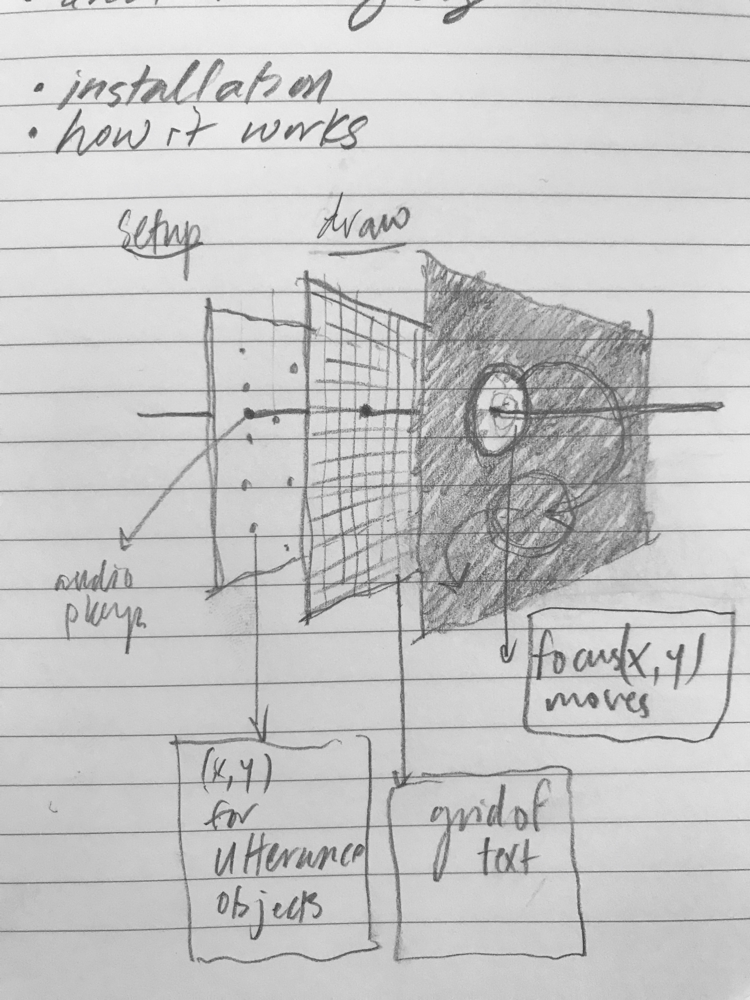
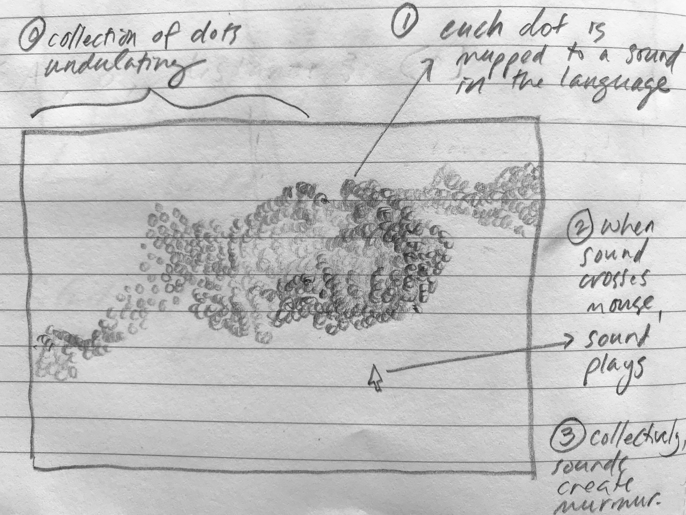
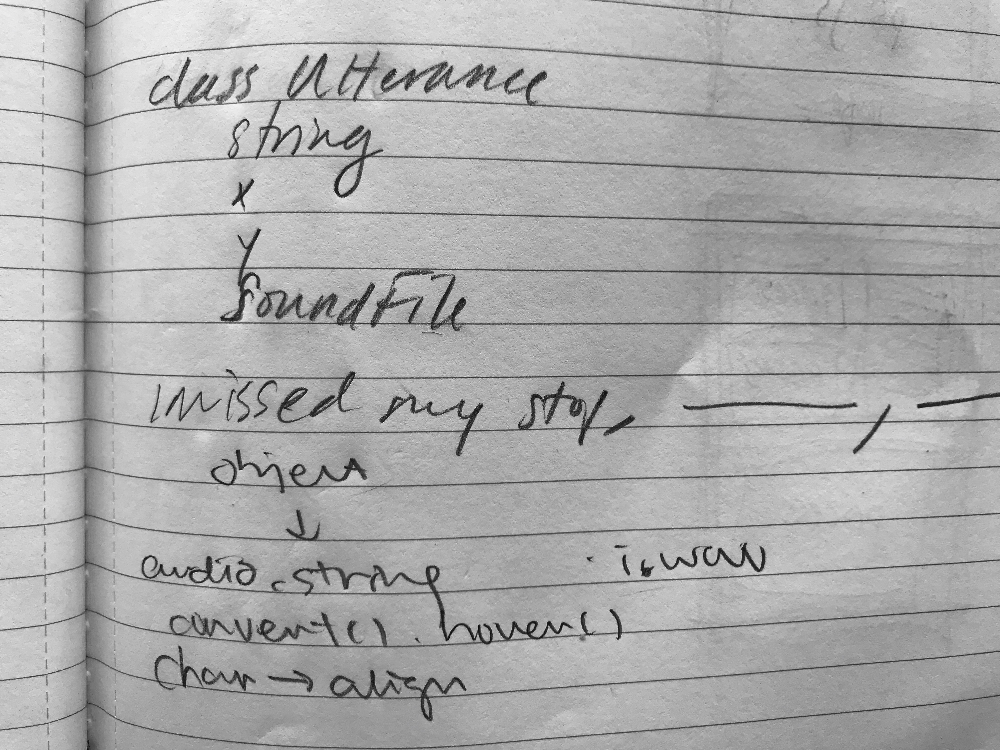

Murmurs
Can we find curiosity and wonder in everyday speech? Hundreds of audio files containing everyday speech generate a "canvas" of moving language. The result is an audio-visual experience where language becomes a material worthy of wonder.

Every run of the Processing code generates a slightly different path of text and corresponding sound (audio component to be added to site soon)

Artifact still detail
Sketch showing basic implementaiton: a grid of ~400 audio objects ("Utterances") is layed out during the code's setup phase, followed by a grid of corresponding text during the draw phase; the grids are "quiet" by default; as the sketch runs, a semi-randomly moving focal point moves across the grid, awakening the audio and text
Early sketch
Pseudocode

Early sketch

Early sketch